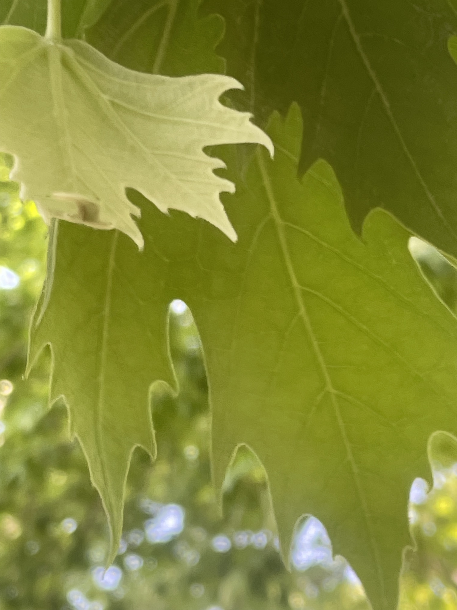
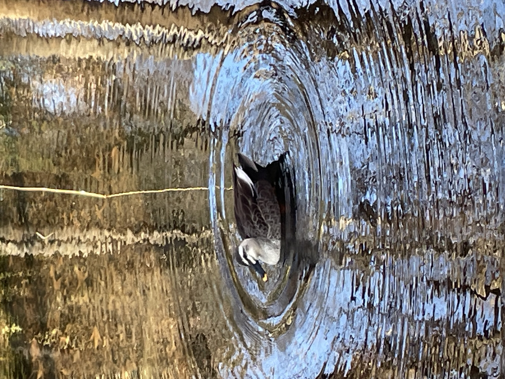

A Place You Don’t Have to Travel Far For
I used to think that I had to leave Tokyo to find this kind of peace.
But Rinshino-Mori Park is right in the city - about 20 minutes from central Tokyo, and only a ten-minute walk from Musashi-Koyama Station on the Tokyu Meguro Line.
You don't need a full day. Even thirty minutes to an hour here is enough to reawken your senses.
The park was once used as a forestry research station. Now it feels like a quiet refuge, from the city's noise and crowd, tucked inside Tokyo.
Especially recommended in the early morning, before the city wakes up.
Smell — The Scent That Makes You Breathe
When I step inside and take a deep breath, the air feels different.
A faint smell of trees and damp earth. Cool at the back of the nose, and subtle.
I like to sit near Seseragi Bridge in the center of the park — a small pond in front of me, trees overhead. Without noticing, my breathing deepens and my mind loosens.
Forest air phytoncides are said to have a calming effect. But when I'm here, I don't think about any of that.
I simply take my time, and let it pass.

Sight — Light Through the Leaves
In spring, I walk beneath the cherry blossoms.
In early summer, young leaves catch the light and turn translucent, and the whole forest becomes a gradation of green.
In winter, the bare plane trees reveal their trunks, and the patterns in the bark are worth stopping for.
When I look up, and the sky feels wide and open.

Hearing — The Silence That Sharpens
Stop walking. Just listen.
There is almost no man-made sound. No traffic. In the early morning, the park offers nothing but the soft rustle of leaves and the occasional bird.
If I close my eyes, I might hear my own breathing.

Touch — The Softness Underfoot
I didn’t expect the ground to feel so soft.
Walking on fallen leaves, the earth pushes back gently underfoot.
Feet used to hard pavement finally get to rest.

Taste — A Simple Pause
After walking for a while, I sometimes rest on a park bench and savor the air. Other times, I stop at a café near the park.
A warm drink after time among the trees tastes a little different than usual.

A Small Invitation
In this park, I feel the tension that has quietly accumulated from days spent surrounded by buildings and neon signs slowly melting away.
If you find yourself in Tokyo and need a moment to pause, this small quiet forest is always here.
If you decide to visit, here are a few simple notes.
Rinshinomori Park ~ Before You Go
- Location: Rinshinomori Park, Meguro & Shinagawa, Tokyo
- Access: About a 10-minute walk from Tokyu Musashi-Koyama Station
- Hours: Open daily, year-round
- Admission: Free
- Best time to visit: Early morning is quieter and recommended.